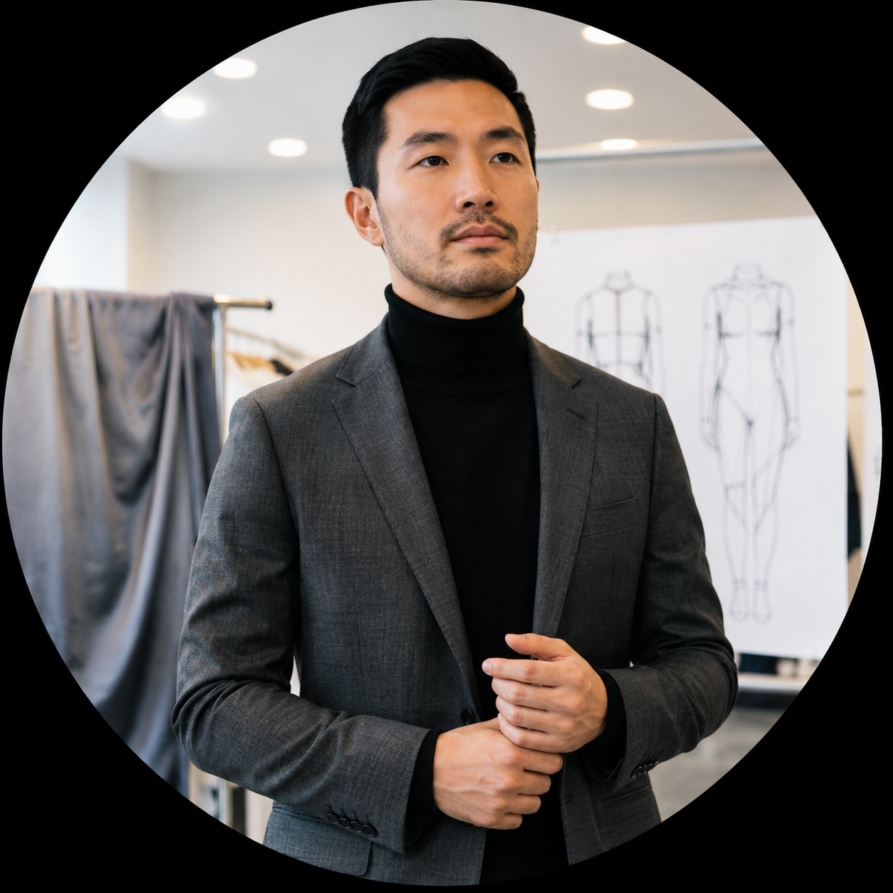
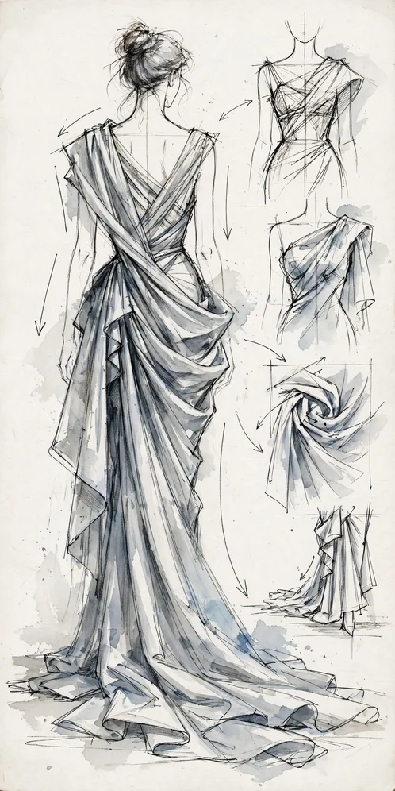
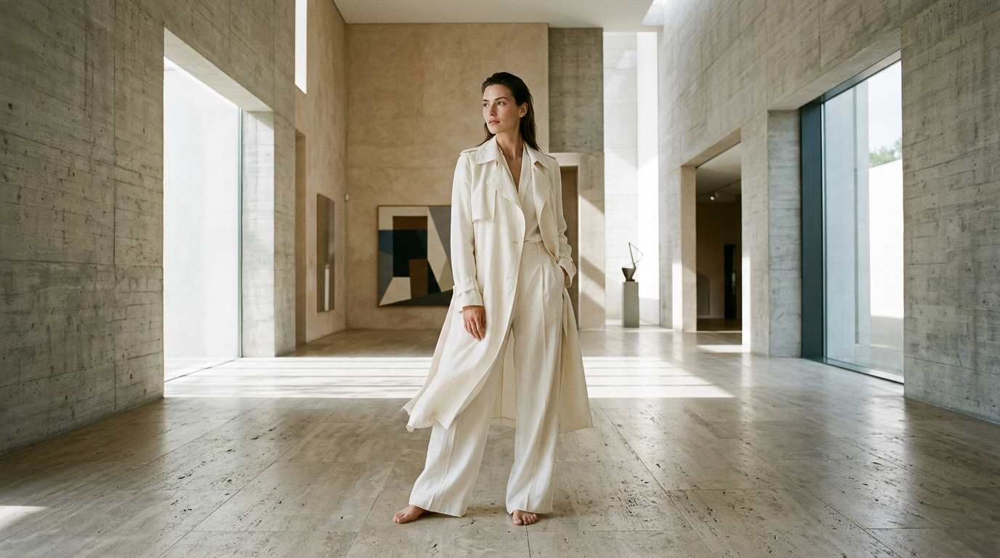
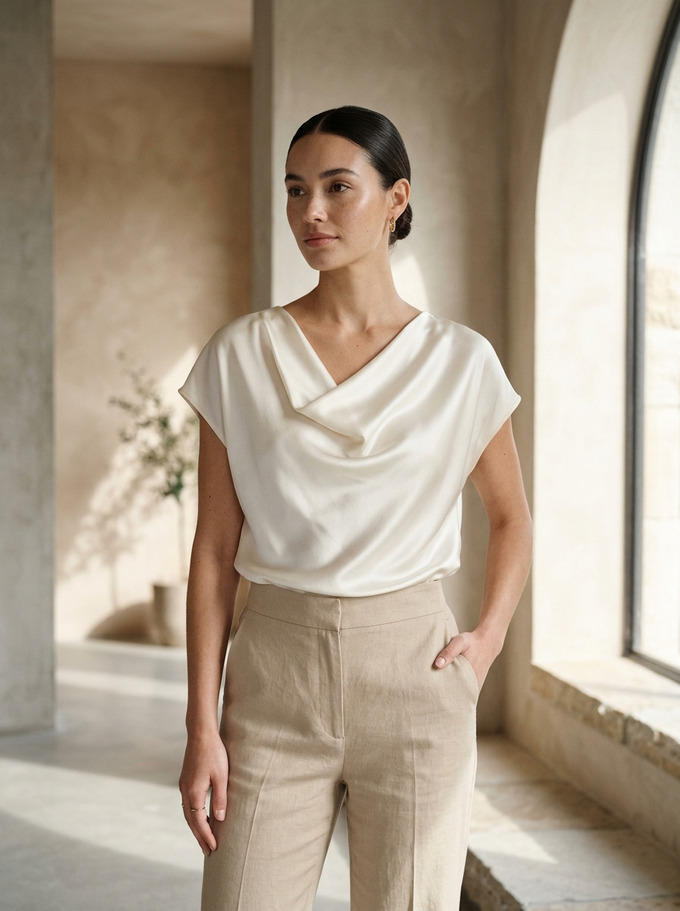
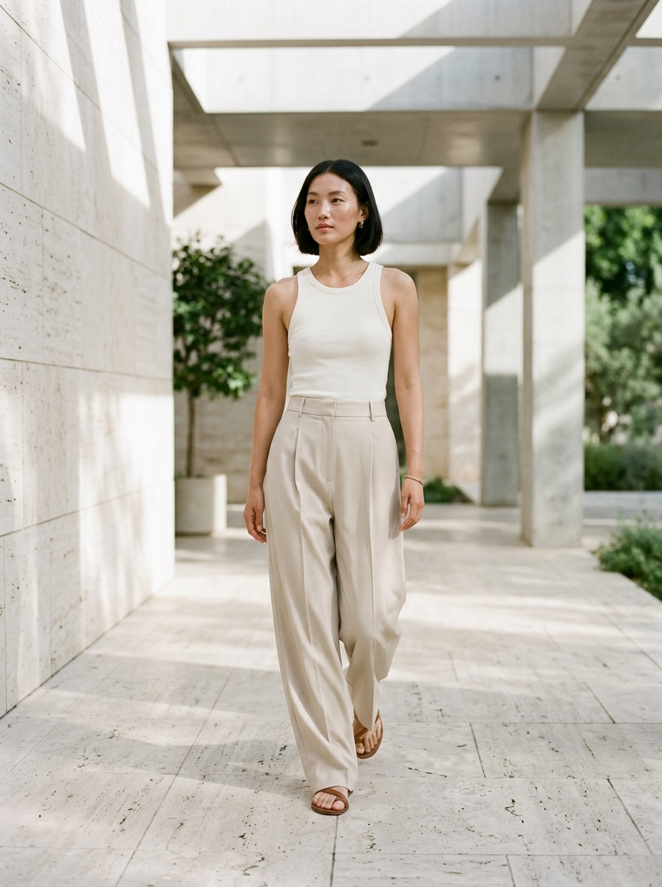

Material First
We shape each product around fiber behavior and yarn architecture, allowing fabric mechanics to guide the silhouette.

We create thoughtful womenswear shaped by fiber, touch, and the way women live every day.
A garment begins at the fiber level, taking form through yarn twist, fabric structure, and daily wear over time.
We founded SOROFIB to reconnect fiber technology, dressmaking, and everyday reality. Rather than beginning with abstract fashion sketching, our designs originate from how textiles drape, stretch, recover, and feel against the skin throughout dynamic movement.
With quiet lines, measured proportions, and attentive product engineering, we create enduring foundational pieces for the international woman's wardrobe. Our perspective lives in tactile permanence, structural integrity, and exquisite detail.
We shape each product around fiber behavior and yarn architecture, allowing fabric mechanics to guide the silhouette.
We evaluate ergonomic movement, tactile softness, and versatile styling so refined design feels intuitive and effortless.
We prioritize wash resilience, shape recovery, and lasting aesthetic relevance over the churn of seasonal trend cycles.
Bridging polymer research, material integrity, and contemporary garment architecture in Los Angeles.
Operating from our Los Angeles studio, SOROFIB brings together textile engineers, pattern makers, and fashion designers around a collaborative workbench. In an industry dominated by synthetic blends that pill and lose recovery, or delicate fabrics unsuited for modern schedules, we sought a third path—garments that embody liquid softness yet possess remarkable shape memory.
Our research delves deeply into bio-based polymer platforms, including Sorona®, evaluating how renewably sourced plant components can replace fossil-fuel synthetics without sacrificing silky drape or tailoring precision. By working closely with progressive spinning mills and textile weavers, we refine each yarn count and gauge to yield clothing that remains uncompromised over years of wear.
Our long-term direction is straightforward: expanding a permanent wardrobe library characterized by tactile permanence, circular responsibility, and timeless silhouettes tailored for discerning women worldwide.


We celebrate the intrinsic attributes of fibers—never masking poor materials with superficial ornamentation or fragile coatings.
Crafting a core wardrobe of quiet confidence where clothing retains its hand-feel, structural line, and elegance across years of active life.
Translating sophisticated polymer science into everyday fluid garments that breathe, stretch, and recover without artificial stiffness.
Gradually substituting petroleum-derived synthetics with verified bio-circular feedstocks and traceable mill partnerships.
Brand direction, polymer science, and garment engineering collaborate at the same workbench to rethink womenswear.
Born in Taipei, Mia studied business management and market strategy at the National University of Singapore. She brings more than five years of sales leadership experience in her family business, followed by entrepreneurial and investment work in the United States. Her interests include material innovation, apparel development, and global markets. At SOROFIB, she guides brand direction, product definition, and commercialization.
Mia believes a deeper understanding of materials makes a product's value clearer. From fiber selection to the finished garment, design should be grounded in real wear and lasting use.
Founder & Creative DirectorElias focuses on polymer physics and bio-fiber research, examining microscopic crystal structures, recovery thresholds, and apparel blend mechanics to inform our textile development.
Isabella works across styling and silhouette development, translating material properties and cultural observations into fluid, wearable, and timeless collection concepts.

Julian oversees pattern drafting and technical make specifications, harmonizing fabric drape behavior with seam construction from initial muslin prototype through finished production.
Elena crafts custom knit geometries and yarn blends, pairing Sorona® fibers with silk, linen, and Merino wool to evaluate tactile softness, breathability, and skin comfort.

Material is the essence of the garment experience, never an afterthought. SOROFIB examines polymers, spinning twists, and weave densities to understand differences in tactile softness, multi-directional recovery, moisture management, and durability.
Sorona® is one bio-based material platform we are actively exploring. Engineered with 37% plant-based components, it provides inherent elasticity and wrinkle resilience without heavy elastane. We describe all material performance carefully, verified against empirical testing and certified supplier documentation.
Exploring yarn twist, knit gauge, and microscopic weave architecture to optimize breathability, fluid drape, and tactile depth.
Studying softness and multi-directional elastic memory so fluid silhouettes comfortably hold their form through daily motion.
Investigating renewable, plant-derived feedstocks to minimize environmental impact without compromising luxurious hand-feel.
Engineering wash resilience, pilling resistance, and dimensional integrity for enduring pieces designed to last across seasons.
Employing responsible water stewardship and low-impact treatments that honor and preserve the natural behavior of the fiber.
Inspired by verified Sorona® polymer platforms to explore stretch, warmth, drape, and structural performance in womenswear.
An innovative comfort-stretch technology engineered to move with the body. Unlike traditional spandex that degrades over time with chlorine, heat, and laundering, Agile-inspired fibers provide resilient, mechanical multi-directional stretch that bounces back perpetually without bagging at knees or elbows.
Lightweight, breathable thermal insulation delivering down-like loft, exceptional softness, and dependable warmth without bulk. Derived partially from plant-based feedstocks, it compresses effortlessly and springs back to original loft, ideal for trans-seasonal outerwear layers and quilted jackets.
Engineered for intimate blends with natural fibers—including Mulberry silk, fine Merino wool, organic cotton, and European linen. It imparts a remarkably fluid, liquid hand, gentle cool-to-touch surface, and luminous drape that enhances the tactile luxury of blouses and evening dresses.
Designed for tailored womenswear that demands clean architectural lines. Profile-based weaves provide crisp creases, high wrinkle resistance, and dimensional stability, ensuring tailored trousers and structured trench coats maintain a freshly pressed look through transatlantic flights.
Focused on long-term shape memory and dimensional stability over continuous wash and wear cycles. It resists fabric shrinkage, pilling, and fiber distortion, offering unmatched durability for high-rotation wardrobe foundations and knitwear pieces.
A plant-based alternative to conventional petrochemical faux fur. Provides sumptuous tactile softness, realistic natural luster, and moisture repellency. Offers animal-free warmth with significantly lower environmental footprint and superior fiber resilience.
Explore the dialogue between initial atelier hand sketches and realized garments. Hover your cursor over each sketch to reveal the finished output design.



A definitive look at our foundational garment creations, technical shells, and specialized fiber weave executions.


Everyday essentials tailored in bio-circular fabrics, engineered for longevity and effortless daily dressing.
 Archive Core
Archive Core
Constructed with high-density Profile weave. Delivers crisp architectural lines with natural thermal loft and enduring crease recovery.
 Archive Signature
Archive Signature
Wide-leg silhouette utilizing Agile multi-directional stretch. Retains its sharp center pleat without knee deformation throughout long workdays.
 Archive Foundation
Archive Foundation
Featuring Luxe silk-touch yarn technology. Liquid-soft drape with subtle matte sheen and natural breathability against bare skin.
 Archive Resort
Archive Resort
Cut on the bias to move harmoniously with the body. Wrinkle-resistant fiber memory makes it an ideal piece for destination travel.
 Archive Leisure
Archive Leisure
Minimalist two-piece set designed for effortless lounging and travel. Soft, breathable knit structure that packs flat and sheds creases instantly.
 Archive Knitwear
Archive Knitwear
Medium-gauge textured knit utilizing Aura thermal loft. Provides comforting insulating warmth without excessive weight or synthetic prickle.
 Archive Tailoring
Archive Tailoring
Engineered with controlled internal tension. Maintains its geometric line and structured drape whether seated or walking.
 Archive Foundation
Archive Foundation
Second-skin micro-gauge jersey. Provides seamless comfort, temperature regulation, and high colorfastness over dozens of laundry cycles.
We develop collections through empirical material exploration, sample iterations, and rigorous wear evaluation to create enduring wardrobe anchors.
We scrutinize raw fiber origins, yarn twist, and fabric weave architectures against our design goals, documenting all supplier certifications and ingredient disclosures.
We analyze hand feel, weight, multidirectional recovery, and drape to select fabrics ideally aligned with the mechanical requirements of each garment type.
Fabric behavior dictates pattern geometry. We cut and seam multiple iterations to refine how proportion, balance, and clean lines perform in real motion.
Extended fitting sessions, wash resistance trials, and real-world everyday trials ensure each style delivers sustained comfort, low maintenance, and enduring elegance.
SOROFIB considers responsible material choices an integral part of long-term product engineering, with careful attention to sourcing, product lifespan, and circular durability. Bio-based content, environmental attributes, and performance claims for Sorona® or other polymer platforms are evaluated strictly against verified supplier disclosures, third-party laboratory certifications, and applicable global labeling standards.
Environmental impacts vary across fiber blends, spinning methods, dyeing treatments, and consumer garment care. We do not make unsubstantiated marketing statements or speculative environmental guarantees. Product imagery and technical specifications are provided for brand transparency. Actual garment colors, fabric weights, and care instructions correspond to final production labeling.
This season begins with the space between body and fabric. Softness holds its shape, structure feels weightless, and every piece leaves room to live and move.
Read the Season Story ↓The Quiet Form is a study in restraint and the intimate sensation of clothing on the skin. Fluid lines, soft structural tailoring, and easy-to-layer proportions speak to an understated sense of ease in everyday life.
This collection originated from observing fabric physics: how subtle drape defines a woman's silhouette, how measured elasticity supports unrestricted motion, and how minimal seams honor clean fabric geometry. Pieces are engineered to mix and harmonize across professional, travel, and personal settings.
We cherish the ritual of returning to a favorite garment season after season. Exact fiber blends and care instructions accompany every piece upon release.
Inquire About Season Availability ↗ LOOK 01 · THE QUIET FORM
LOOK 01 · THE QUIET FORM
 LOOK 02 · A STUDY IN EASE
LOOK 02 · A STUDY IN EASE
 LOOK 03 · FLUID FOUNDATION
LOOK 03 · FLUID FOUNDATION
Explore our ongoing seasonal chapters. Each collection investigates unique material thresholds—from warm-weather open-weave breathability to winter architectural insulation.
A study in fluid restraint and effortless air. Designed for warm climates and transitional days, this series investigates lightweight bio-based polymers and open-weave drape. Pieces float away from the skin while maintaining sharp, intentional lines.


High-twist Bio-Luxe silk-touch yarn. Features a soft cowl neckline and breathable weave that resists body heat entrapment while maintaining a delicate matte sheen.

Engineered with Agile multi-stretch weave. High-rise drape with knife-sharp center pleats that remain crisp after hours of transit and seated work.
Contemporary fluid daywear tailored with bio-polymer yarn memory for zero-crease elegance in warm daylight environments and daily motion.
By spinning bio-derived PDO polymer filaments under calibrated high twist, the microscopic space between yarns remains open during motion. This allows rapid air displacement and moisture dispersal, eliminating synthetic cling.
Structured outerwear and protective layering re-imagined with weightless warmth. Incorporating Aura thermal loft fibers, winter tailoring maintains crisp angular silhouettes without the stiff, burdensome bulk of traditional cold-weather garments.
Profile weave wool blend delivering sculpted shoulder architecture with weightless thermal loft and permanent lapel crease retention.
Aura hollow-core yarn structure providing plush softness and breathable heat retention with zero prickle across sensitive necklines.
Sculptural runway cape suit cut from heavy profile-weave wool blend. Delivers sharp architectural lines, fluid motion, and comfortable thermal insulation.
Engineered using trilobal hollow fibers that capture warm microscopic air pockets. The fabric achieves substantial outerwear drape and thermal performance at half the weight of traditional virgin wool.
The foundation of modern daily dressing. Pieces crafted with continuous elastic memory that resist bagging at joints, recover from luggage packing immediately, and maintain crisp geometry from morning transit to evening engagements.
Full-stride single-breasted blazer and fluid wide-leg trouser set engineered with Agile multi-stretch weave. Maintains crisp geometry and resists knee bagging through long transit days.
Double-face structural weave in vibrant vermilion. Holds intentional geometric folds whether walking or seated, shedding sit-creases naturally.
Featherweight layering essentials offered in calibrated neutral tones. Incredibly soft against bare skin, pill-resistant, and enduring across washings.
Every junction is mapped along natural biomechanical lines of tension. Low-profile flatlock seaming and reinforced strain nodes ensure the garment stretches uniformly under physical stress without seam blowout or contour distortion.
Where material innovation translates into expressive evening and resort silhouettes. Weaving structures juxtapose refined botanical luster with high-performance polymer resilience, resulting in fluid garments that move like water yet maintain crisp structural edges.
Cut on the bias to follow body contours naturally with zero tension points. High-twist crepe yarn creates delicate diagonal drape folds with an understated matte sheen.
Matching lounge-to-dinner coordinates featuring custom botanical motifs printed on breathable, ultra-supple high-twist yarn.
Full-length bias-cut evening gown engineered with dimensional fiber weave logic. Natural cascade drape conforms seamlessly to bodily motion with an understated luminous finish.
A bespoke weaving experiment uniting fine metallic filaments with flexible Sorona® bio-polymers. The raised grid matrix captures light across dimensional angles while preserving the tactile softness needed for next-to-skin luxury.
This season's textile selection focuses on tactile softness, dimensional stability, and effortless care. By incorporating bio-based polymer blends, our pieces offer permanent wrinkle resistance and comfortable two-way stretch without reliance on heavy elastane.
Detailed fabric specifications and certified origin documentation will be provided alongside each product release.
For product inquiries, partnership opportunities, or material research collaborations, please reach out directly.
zt19851015@gmail.com3501 Santa Monica
Torrance, Los Angeles, CA
Wholesale & press
zt19851015@gmail.com
Studio visits are available by appointment.
Material research & design atelier.